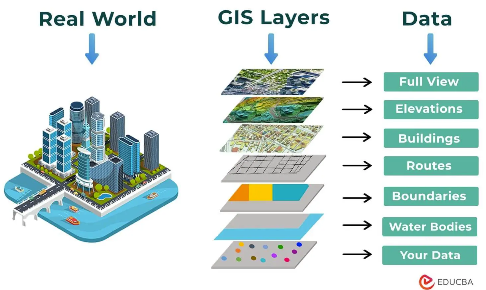
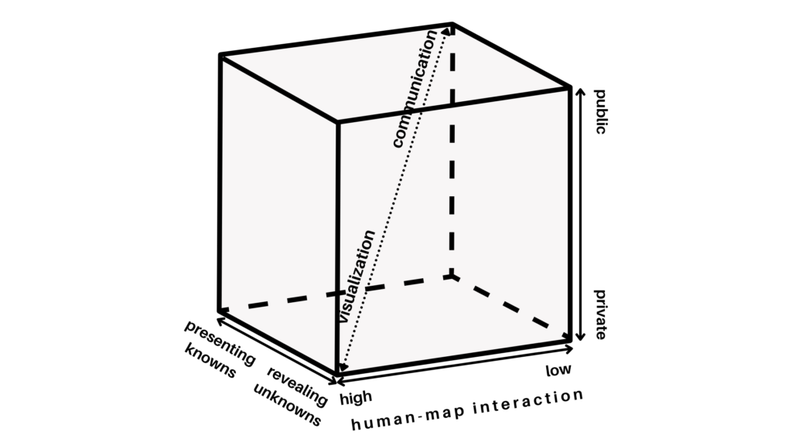
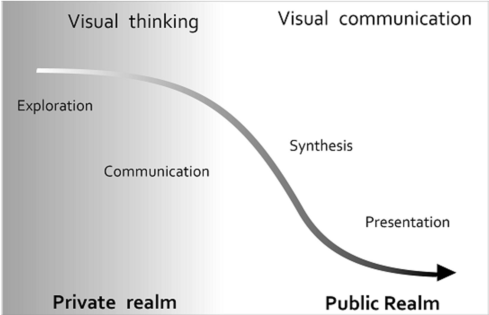
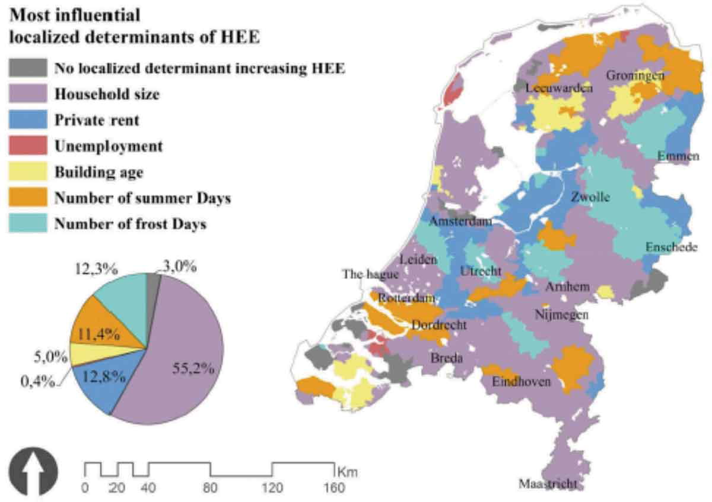
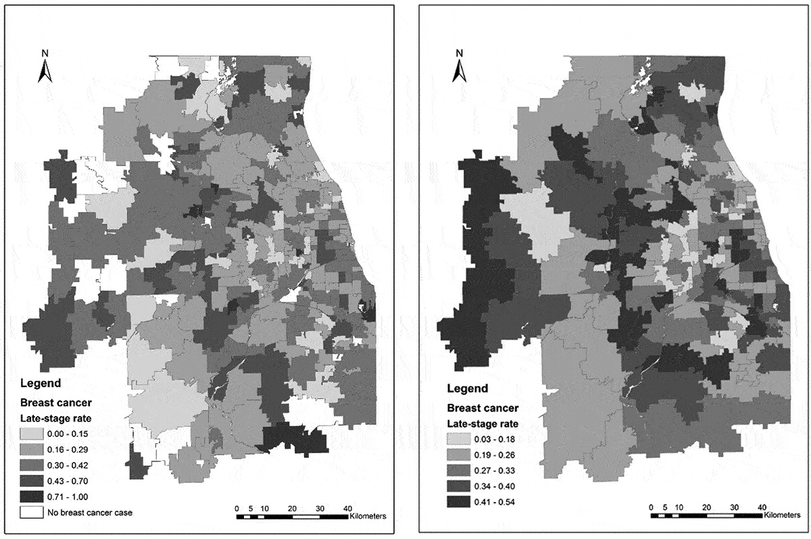
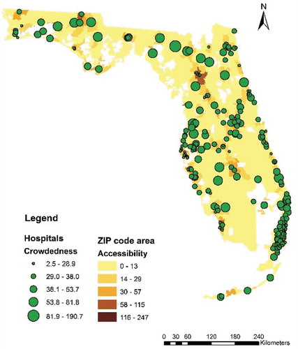

Introduction to GIS for Public Health
Introduction
Introduction
- Public health - demands a broader view!
- The need for participatory decision making in public health
- The transparency of open data science approach
Areas of Research Methods
The third upcoming area of research methods
- Observational
- Experimental
- Computational/data science/ML/AI, etc.
What information does GIS use?
- Data that defines geographical features like roads, rivers
- Soil types, land use, elevation
- Demographics, socioeconomic attributes
- Environmental, climate, air-quality
- Annotations that label features and places
What is (Geo)-Spatial Data Science?
- Analyse and extract insights from geospatial data
- Work with real-world data on a number of domains and problems
- Acquire key data science skills and important tools to answer spatial questions
A valuable tool for public health policy advocacy
The Process of Geospatial Data Science

Mininum skills for public health data science
Hard Skills - Programming Language - Transparency and Reproducibility
Soft Skills - Communication - Storytelling - Geospatial analytics - Ethical skills
Tools for Spatial Data Science (SDS)
Graphical User Interfaces (GUIs)
- QGIS and GRASS has revolutionized Open source Geographic Information Systems (GIS).
- However, the reproducibility aspect has many challenges
Command Line Interfaces (CLIs)
- R and
- Python
are a good way to bring in reproducible algorithms for GIS/SDS
The Geodata ’revolution’
Advanced Hardware
- High-performance computer hardware
- Efficient algorithms to process vast data sets
Scalable Software
- Scalable solutions with the R
- extract valuable insights from the noise
Spatial Databases
- The advent of spatial databases
Healthcare Data
Traditionally data in healthcare are:
- Collected for the purpose (carefully designed)
- Detailed and informative (“rich profile and portraits”)
- High quality
Healthcare Data: Limitations
However, they are:
- Massive enterprises (very costly)
- Coarse resolution (need to be aggregated to protect privacy)
- Slow - the more detailed, the less frequent they are available
Examples of Health related data
- Decennial census (census geographies)
- Longitudinal surveys
- Custom collected surveys, interviews etc.
- Economic or well-being indicators
New Forms of Spatial Data
Tied into the Geodata revolution
Accidental: created for different purposes but available for analysis as a side product
Diverse: resolution and quality but, potentially much more detailed in both space and time
Challenges (Arribas-Bel, 2014)
- Bias
- Technical barriers
- Methodological “mismatch”
(Geo)-Spatial Visualization
Spatial Visualization

By encoding information visually, they allow to present large amounts of numbers in a meaningful way.
A Map for Everyone
A Real Public Health Tool
- Maps can fulfill several needs, looking very different depending on the end-goal.
Three Main Dimensions
- Knowledge of what is being plotted
- Target audience
- Degree of interactivity
MacEachren & Kraak (1997)

DiBiase’s (1990) “Swoopy”
Translating numbers into a (visual) language that the human brain “speaks better”

Exploratory Visualization
> “forces us to notice what we never expected to see”
(Tukey 1977: vi)
Mostly for researchers in the course of the research process.
Many, quick and dirty, and rather unattractive graphs.
Explanatory Visualization
> “forces readers to see the information the designer wanted to convey”
(Kosslyn 1994: 271)
Mostly for others after the research is completed.
Few, carefully crafted, and attractive graphs.
Choropleths
Thematic map in which values of a variable are encoded using a colour gradient of some sort
- Counterpart of the histogram
Both allows us to guage the distribution of a variable.
Spatial Weights
Spatial Weights
For a statistical method to be explicitly spatial, it needs to contain some representation of the geography, or spatial context.
(Geo)-Spatial Visualization:
- translating numbers into a (visual) language (colors) that the human brain can interpret.
Spatial Weights Matrices:
- translating geography into a (numerical) language that a computer can interpret.
Spatial Weight Matrices
Spatial Weights Matrices are building block for spatial analysis and statistics.
They are used to assign a weighted average or sum of neighbouring data values to an observation, or other point in space.
Relates to concepts of spatial ‘smoothing’ and interpolating data
Applications of Spatial weights
Spatial weights form the core element in several spatial analysis techniques
- Spatial autocorrelation
- Spatial clustering/geo-demographics
- Spatial regression
Spatial Heterogeneity
Most influential local determinants of household energy expenditure

REDCAP and MLR
Late-stage breast cancer rates in Chicago region in 2000: (a) ZIP code areas, (b) REDCAP-constructed areas

::: aside Wang et al., 2015 (doi:10.1080/19475683.2019.1702099) :::2SFCA
- Two-step floating catchment area (2SFCA) method
- Hospital potential crowdedness

Recap

DMgtAsia · Spatial Epidemiology